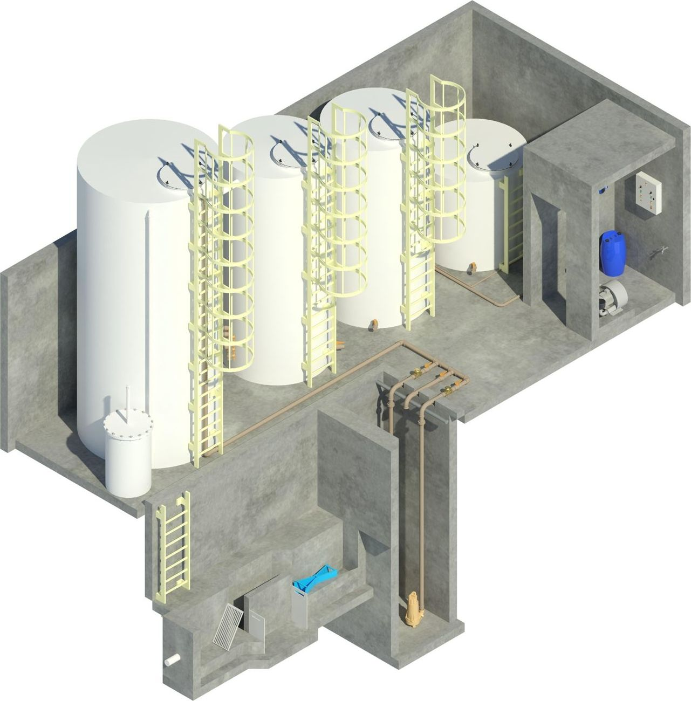
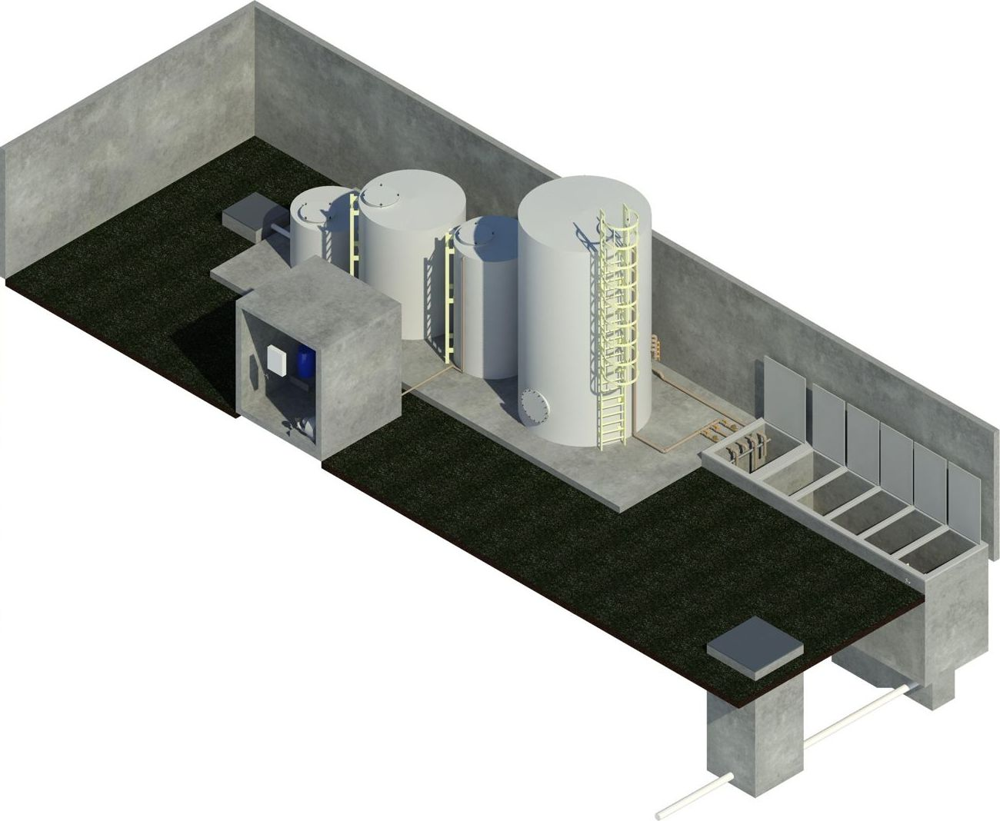
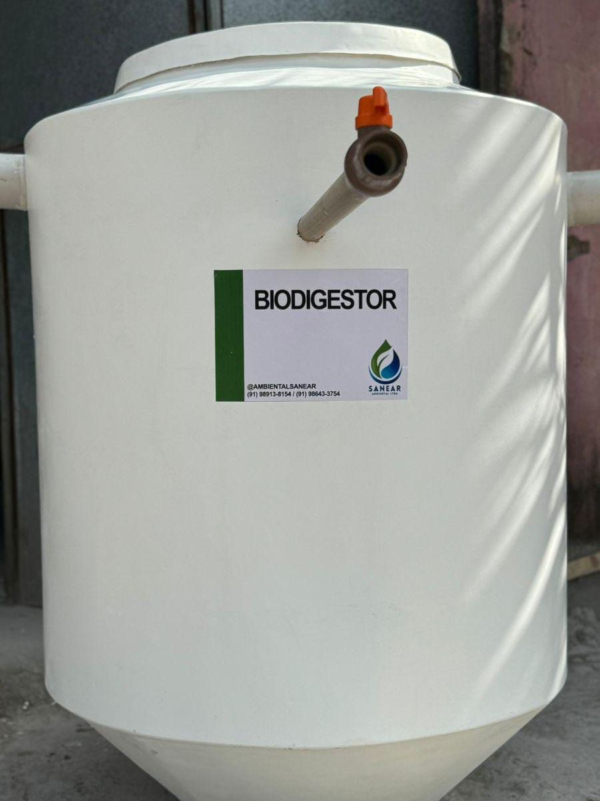
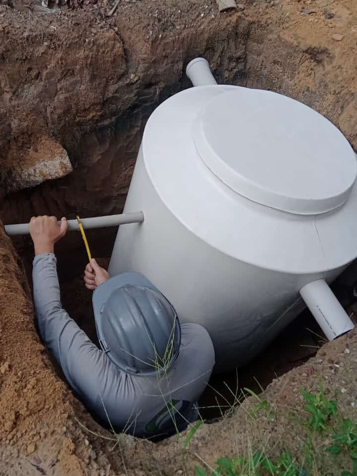
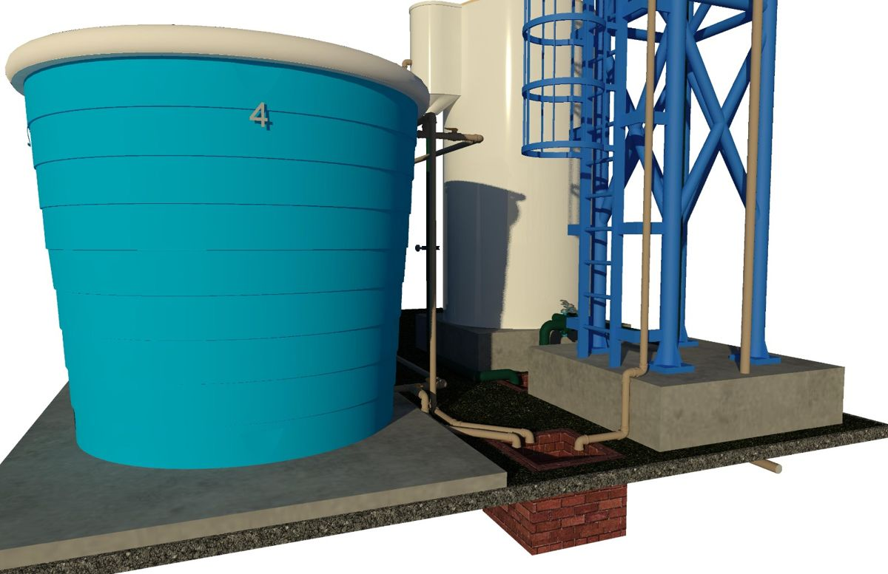
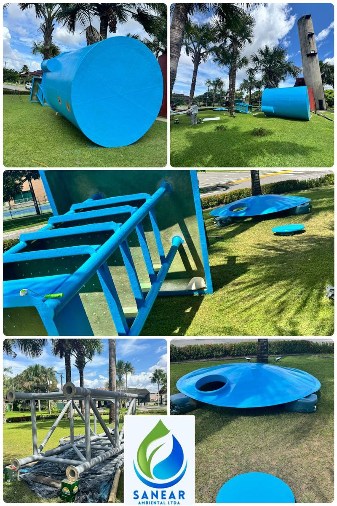

Início › Projetos
Projetos e instalações
Veja equipamentos e instalações da SANEAR em campo.
Projetos de ETE



Biodigestores



ETE: Estações de Tratamento de Esgoto


ETA: Estações de Tratamento de Água



Etapas: correção de pH, torre de aeração, filtro e desinfecção

Etapas: correção de pH, torre de aeração, filtro e desinfecção
Quer um projeto como esses?
Pedir orçamento pelo WhatsApp